reviewStackedBar() cross-tabulates two columns:
col defines the primary category (one bar each) and
group is split within every bar as the fill. It answers
questions like “how does risk of bias break down by study design?”. This
article walks through every argument of
reviewStackedBar(data, col, group, position = c("fill", "stack"),
fill = PALETTE, width = 0.7, sep = "\r\n",
study_id = StudyID, base_size = 12, na.rm = TRUE,
na_label = "Not reported", labels = TRUE)Default
Pass the data frame, the primary column, and the grouping column.
Column names may be bare or quoted. Each col category
becomes one bar, split by group; by default
(position = "fill") every bar is scaled to 100% so you read
proportions, and each segment is annotated with its count and
percentage.
reviewStackedBar(studies, Design, RiskOfBias)
col: the primary category
col sets one bar per level. Any categorical column
works; multi-value cells are split first — see sep below. Here we
make one bar per intervention type:
reviewStackedBar(studies, InterventionType, OpenAccess)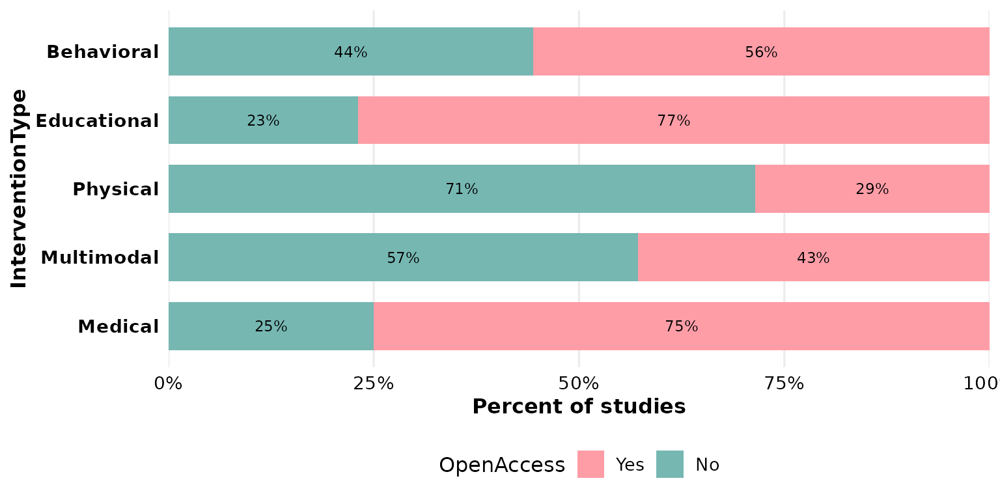
group: the splitting (fill) variable
group is stacked within each bar and drives the legend.
Swapping col and group re-frames the same
cross-tabulation — now one bar per risk-of-bias level, split by
design:
reviewStackedBar(studies, RiskOfBias, Design)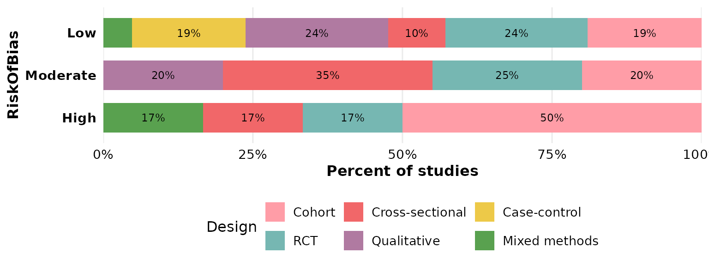
position: proportions vs counts
position = "fill" (the default) scales each bar to 100%,
so bars are comparable regardless of how many studies fall in each
col category:
reviewStackedBar(studies, Design, RiskOfBias, position = "fill")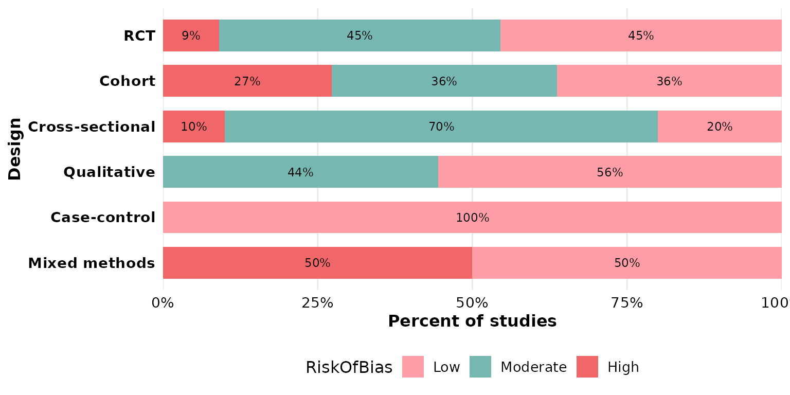
position = "stack" keeps the raw counts, so bar height
reflects the number of studies and the labels report frequencies:
reviewStackedBar(studies, Design, RiskOfBias, position = "stack")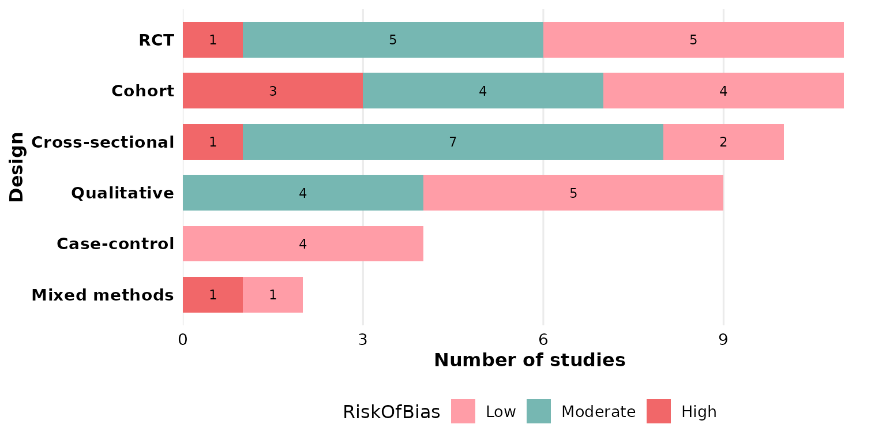
fill: segment colors
The default is the package PALETTE, applied
across the group levels:
reviewStackedBar(studies, Design, RiskOfBias, fill = PALETTE)
Pass a vector of colors to map one color per
group level (recycled if shorter than the number of
levels):
reviewStackedBar(studies, Design, RiskOfBias,
fill = c("#59a14f", "#edc948", "#e15759"))
A named vector pins specific colors to specific
group levels, independent of their order — useful to keep,
say, “High” red across figures:
reviewStackedBar(studies, Design, RiskOfBias,
fill = c("Low" = "#59a14f",
"Moderate" = "#edc948",
"High" = "#e15759"))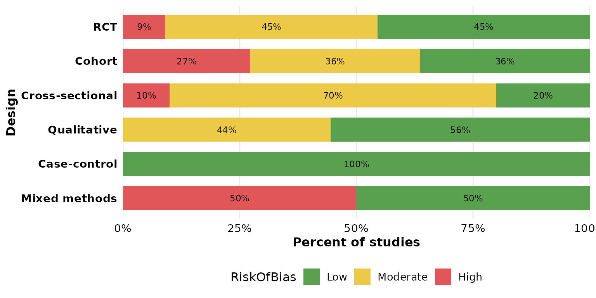
width: bar thickness
width runs from 0 to 1 (fraction of the available band).
Thin bars:
reviewStackedBar(studies, Design, RiskOfBias, width = 0.3)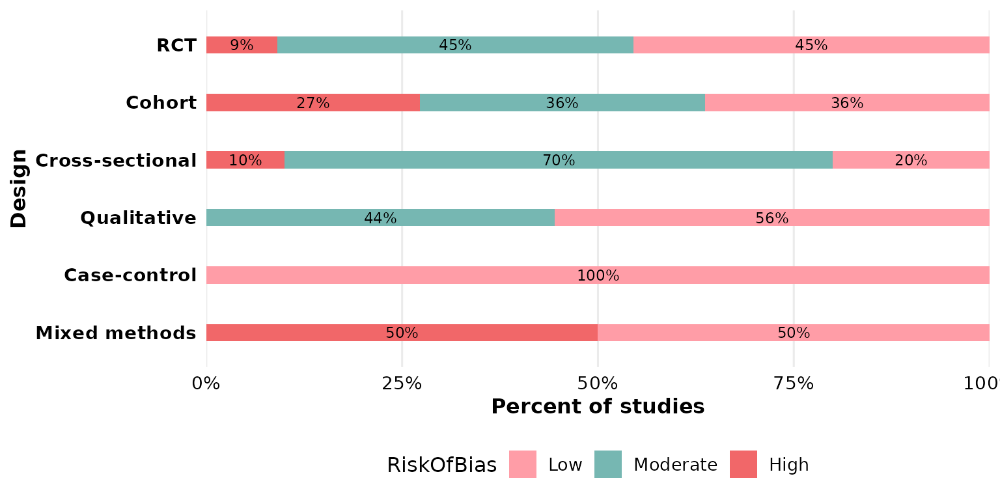
Full-width bars:
reviewStackedBar(studies, Design, RiskOfBias, width = 1)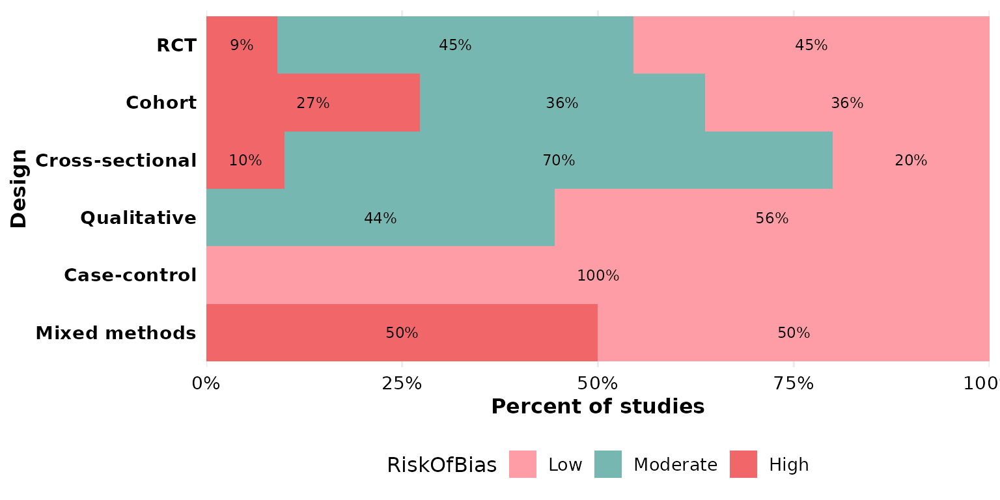
sep: multi-value separator
Either col or group may hold several values
per cell. In studies, Outcome uses newline
separators ("\r\n", the default), so a study reporting
multiple outcomes contributes to each. Here Outcome is the
primary category, split by design:
reviewStackedBar(studies, Outcome, Design)
If your data uses a different delimiter, set sep. Here
we rebuild a semicolon-separated column to demonstrate:
studies_semi <- studies
studies_semi$Outcome <- gsub("\r\n", "; ", studies_semi$Outcome)
reviewStackedBar(studies_semi, Outcome, Design, sep = "; ")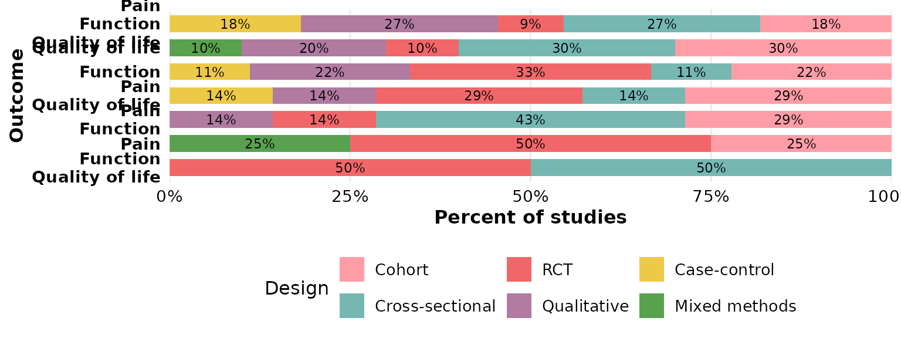
study_id: which column identifies a study
study_id names the column used to identify studies when
de-duplicating and counting (default StudyID). It matters
for multi-value columns, where the same study can appear in several
segments. Pointing it at Author uses that column as the
identifier instead:
reviewStackedBar(studies, Outcome, Design, study_id = Author)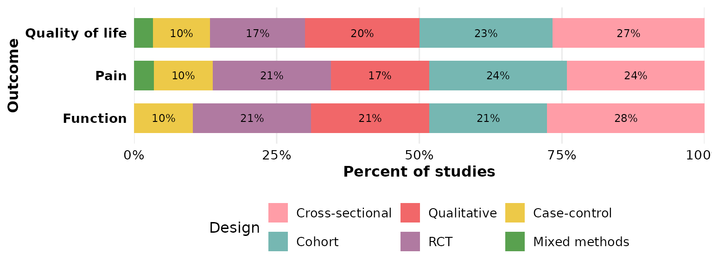
base_size: overall text and element scaling
A single knob scales all text and spacing proportionally. Smaller, for multi-panel figures:
reviewStackedBar(studies, Design, RiskOfBias, base_size = 9)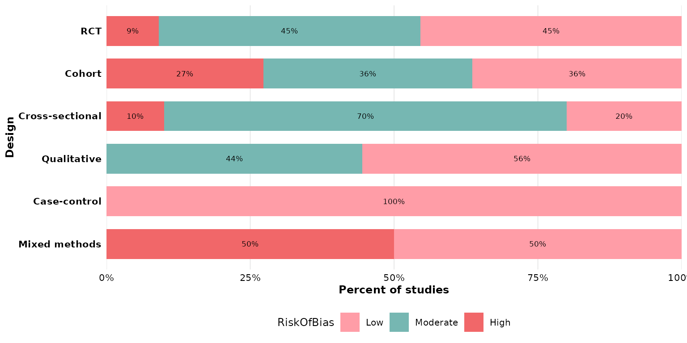
Larger, for slides or posters:
reviewStackedBar(studies, Design, RiskOfBias, base_size = 18)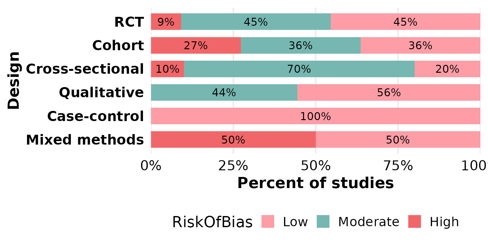
na.rm and na_label: missing data in the
group
This function exposes two missing-data controls, both acting on the
group column. By default na.rm = TRUE drops
rows with a missing group value. OpenAccess
has some unreported entries, which vanish here:
reviewStackedBar(studies, InterventionType, OpenAccess)
Set na.rm = FALSE to keep those rows as their own
segment; na_label sets its name:
reviewStackedBar(studies, InterventionType, OpenAccess,
na.rm = FALSE, na_label = "Not reported")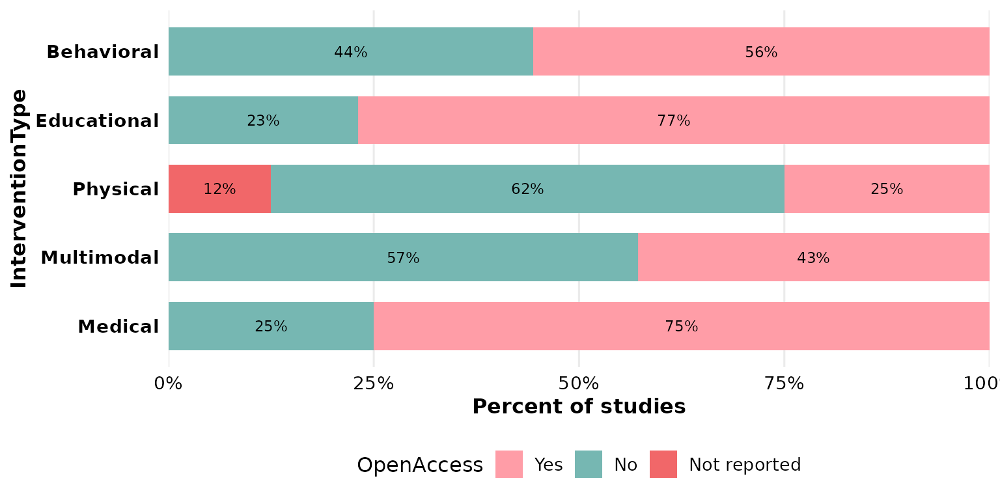
The same pair works for any group with gaps, such as
RiskOfBias:
reviewStackedBar(studies, Design, RiskOfBias,
na.rm = FALSE, na_label = "Unclear")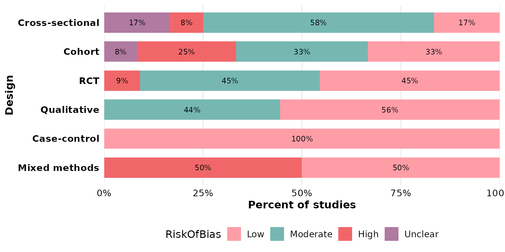
labels: in-segment annotations
labels = TRUE (the default) prints the count/percentage
inside each segment. Turn it off for a cleaner look, leaving the legend
to carry the meaning:
reviewStackedBar(studies, Design, RiskOfBias, labels = FALSE)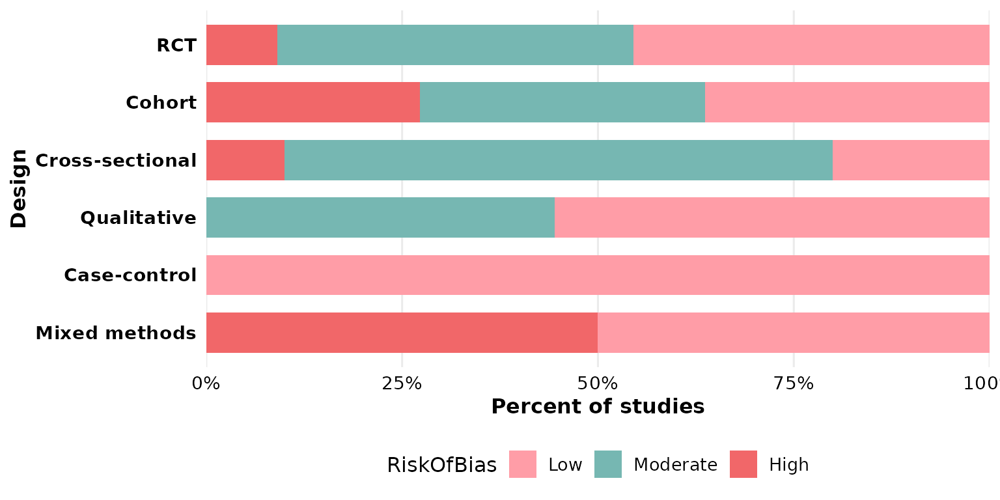
Composing with ggplot2
Every review*() function returns a plain ggplot, so you
can keep adding layers, scales, and labels with +:
reviewStackedBar(studies, Design, RiskOfBias) +
labs(title = "Risk of bias by study design",
subtitle = "n = 50 studies", fill = "Risk of bias",
caption = "Source: example dataset") +
theme(plot.title.position = "plot")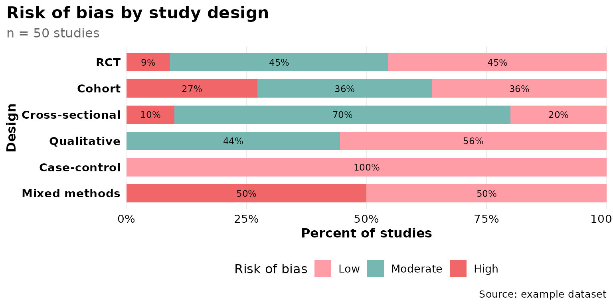